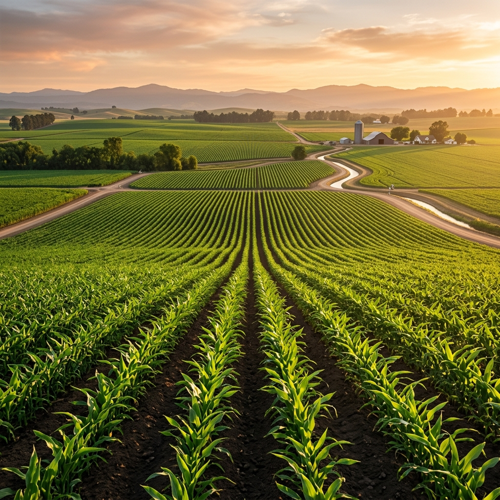

🌿 Trusted by 40,000+ farm families
Growing stronger soil... for generations to come.
Nchem delivers certified organic fertilisers, active liquid bio-inoculants, and humic conditioners engineered for healthy crop yields and living soil.
“Everything we do, in one place — built for farmers, powered by science.”
Our Business Lines
Serving sustainable agriculture through specialized bio-tech services.
🌿
Bio-Fertilisers
⚖
Soil Health
🍀
Organic Inputs
🏪
Farmer Retail
📖
Agro Advisory
🚚
Logistics
💳
Rural Finance
🔬
Bio-Research
🍓
Frozen Foods
Where Nchem Grows
Nchem operates 6 bio-fertiliser production campuses and over 12,000 cooperative distribution hubs.

Nchem Bio-Tech Campus

North Zone Bio Plant

Western R&D Center

Southern Research Hub
Building a brighter & healthier...
agricultural future together.
Organic & Bio-Fertiliser Range
Nchem's range of bio-fertilisers and organic soil improvers are formulated to restore soil microflora, boost nutrient absorption, and yield healthy crops naturally without harmful residues.